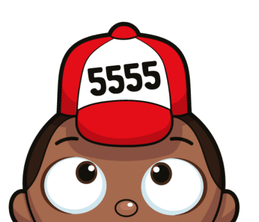

A 5-brain AI collective that mirrors your community back to itself. Not a hand. A mirror.
5FAN doesn't tell you what to do. It reflects what's already happening in your community — the patterns, the energy, the moments worth noticing. It speaks your language back to you.
"The best communities don't need leaders telling them what to feel. They need a mirror that shows them what they already are."
Every interaction passes through 5 specialized brains. They analyze together, reach consensus, and respond as one unified voice — 5FAN.
Detects tone, sentiment, and emotional undercurrents. Knows when someone needs encouragement vs. space.
Finds moments worth celebrating. Crafts the spark that turns a quiet thread into a community moment.
Reads community momentum — active times, quiet hours, streaks, patterns. Knows when to speak and when to listen.
Remembers each person's journey — their streaks, their growth, their language. Mirrors their progress back to them.
Sees the big picture. Decides what type of response serves the community best — nudge, celebration, or quiet presence.
When a message arrives, all 5 brains analyze it simultaneously. They share notes, reach consensus, and 5FAN responds with one unified voice — informed by five perspectives.
Every interaction follows the same path — community in, mirror out.
Reflects the community's own energy back. Never prescribes. Never lectures.
Zero-cost brain templates with optional cloud polish. No paywalls on presence.
Built on Hyperswarm + Pear Runtime. No central server. The community IS the network.
5FAN speaks how you speak. It mirrors your community's tone, slang, and rhythm.
Not every moment needs a response. Flow brain reads the room and sometimes just listens.
One AI can be wrong. Five brains reaching consensus create something more thoughtful.